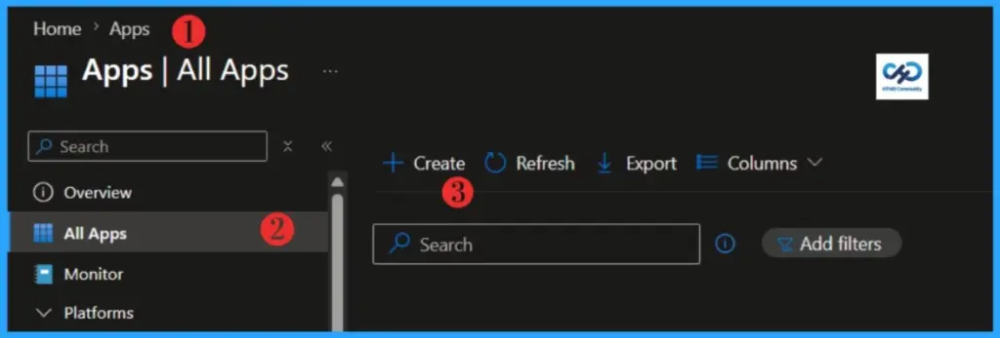
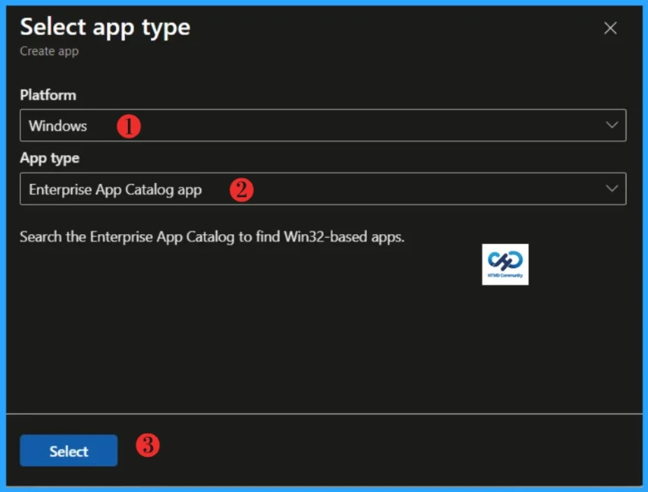
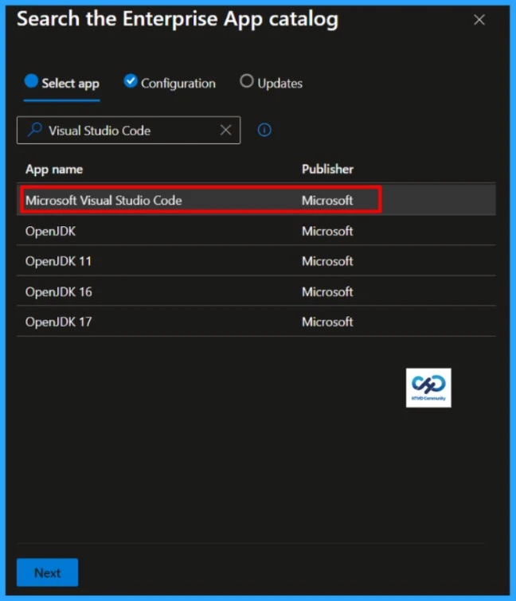
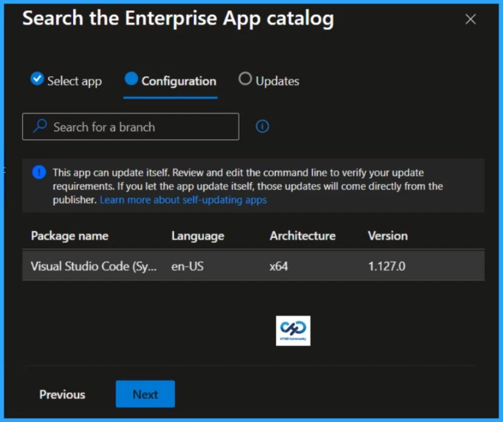
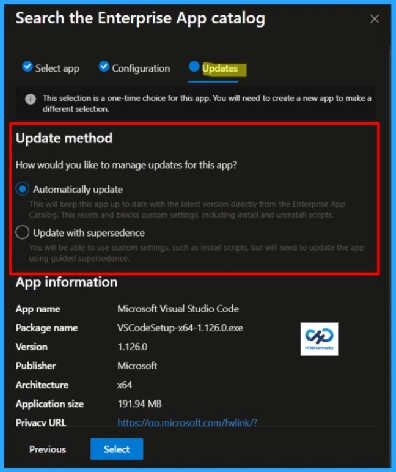
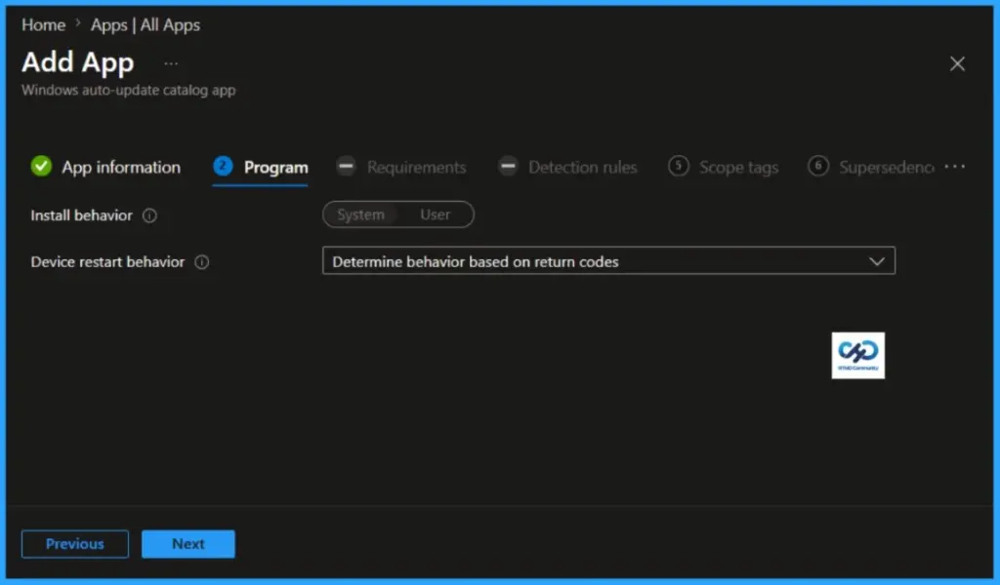
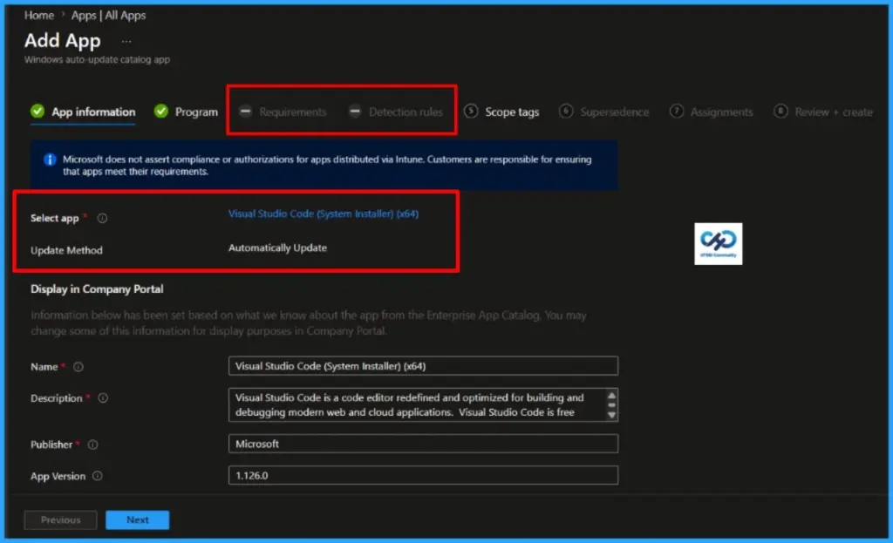
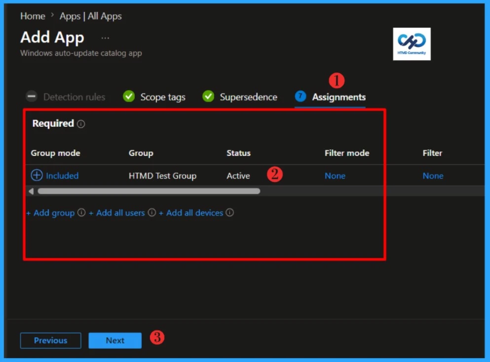
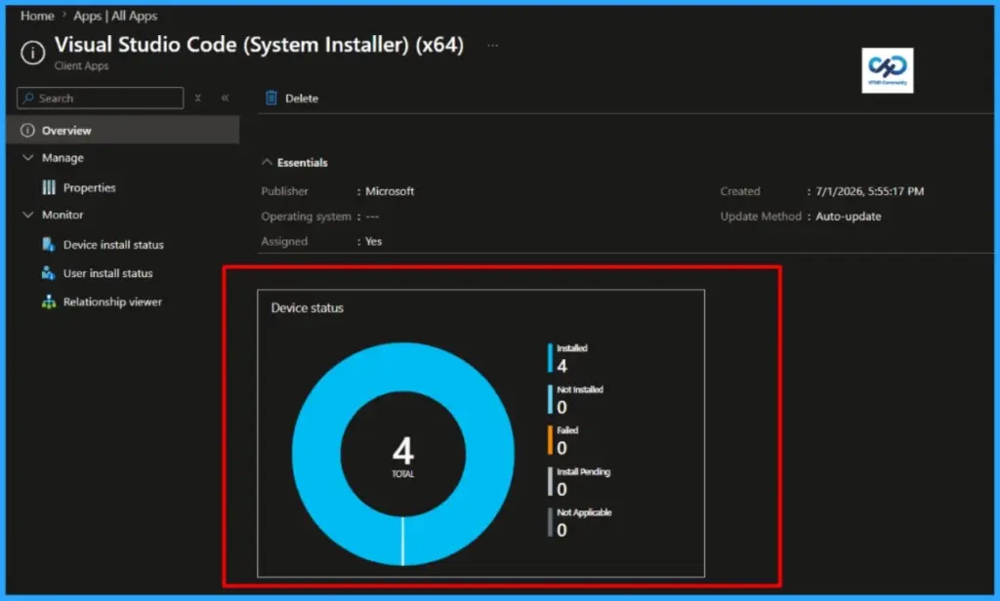
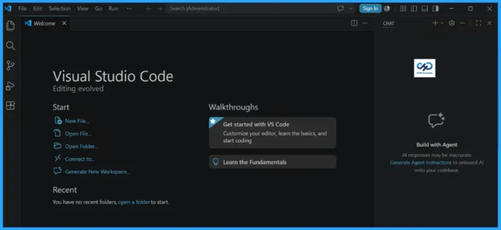

Key Takeaways
- The Enterprise App Catalog is a collection of prepared Microsoft and non-Microsoft applications.
- These apps are Win32 apps that are prepared as Win32 apps and hosted by Microsoft.
- EAM enables you to easily discover and deploy applications and keep them up to date
- The Enterprise App Catalog is available for Windows apps.
Hola! I hope you’re enjoying your Intune journey. Let’s explore how enabling Enterprise Application Management (EAM) auto-updates in Intune helps keep applications secure. By keeping apps updated, you reduce exposure to vulnerabilities and strengthen your overall security posture.
Table of Contents
What’s Enterprise Application Management (EAM)
The Enterprise Application Management (EAM) provides IT administrators with a catalog of prepackaged Microsoft and non-Microsoft applications that are hosted and maintained by Microsoft. The Enterprise App Catalog is an assemblage of pre-packaged Win32 applications that are specifically formulated and developed by Microsoft to facilitate the smooth functioning of Intune. These applications are meticulously designed to provide optimal support to the Intune platform, ensuring its seamless operation and efficient performance.
When you add any Enterprise App Catalog application, Intune itself auto-fills many details. For example, The Commands to install and uninstall the app, the application’s name, the App Version, the number of minutes the system will wait for the program’s installation to finish, the detection rule, etc. Microsoft recommends using the pre-populated fields containing specific commands and rules. However, you can modify the pre-populated fields if you want.
You can request that an application be added to the Enterprise App Catalogue. If you aren’t already working with a Microsoft contact, fill out the form to request that an application be added to the Enterprise App Catalogue. Microsoft also hosts the applications in Microsoft storage.
Stay Current with Applications, Limit Vulnerability Gaps
Updating applications across an enterprise is rarely as simple as it sounds. When you’re managing hundreds of endpoints and multiple versions of the same software, manual packaging quickly leads to version drift and inconsistent states. That inconsistency makes it harder to remediate vulnerabilities and leaves the overall security posture less predictable.
Intune Enterprise Application Management (EAM) offers a way out of that complexity by consolidating deployments, updates, and policy configuration into a single, cloud‑native workflow. Instead of juggling fragmented processes, IT teams gain a unified approach that improves consistency and reduces operational overhead.
With the introduction of EAM auto‑updates, organisations can now keep managed applications on the latest incremental release – such as moving from 1.1 to 1.2 – without manual packaging or administrator intervention. This capability helps close gaps between major upgrade cycles, limiting exposure to known vulnerabilities and strengthening resilience across the environment.
How to Enable Enterprise Application Management (EAM) Auto-Updates in Intune
Let’s learn how to enable EAM auto-updates in Intune. In this example, I will enable the automatic update option for the Microsoft Visual Studio Code application.

On the Select app type pane, select Windows as Platform and Enterprise App Catalog app Intune application type from the drop-down menu and click Select. After clicking on the Select button, you will see a list of new apps from the Enterprise App Catalog.

Then, click on the Search the Enterprise App Catalog link to display the search panel, which features a search bar. In the search bar, type the name of the application you want to install. In this example, I will search for
Visual Studio Code and select the latest version.

Click Next to check the configuration. The package name, language, architecture, and version can be verified here. Click Next to continue.

Select Updates, and you will see the magic. You will see two update method, Automatically update and Update with Supersedence. You will also see the App information at down including the App name, version, size etc.
| Aspect | Automatically update | Update with Supersedence |
|---|---|---|
| Who controls update logic | Intune Enterprise App Management catalog controls it | You control it through supersedence relationships |
| Admin effort | Low, mostly hands-off | Medium to high, requires version chain management |
| Custom install and uninstall behavior | Limited or blocked to preserve catalog consistency | Supported, you can keep custom behaviour |
| Detection rules editing | Not editable in this mode | Editable (based on your app packaging approach) |
| Requirement rules editing | Not editable in this mode | Editable (based on your app packaging approach) |
| Update speed to latest version | Fast and automatic | Depends on when you publish and supersede |
| Change governance | Less granular control | High control with staged rollout options |
| Risk of configuration drift | Lower, standardized by catalog | Higher if version chain is not maintained carefully |
| Best for | Common apps where rapid patching matters more than customization | Apps needing custom scripts, custom detection, and controlled rollout |
| Rollback strategy | Limited, tied to catalog lifecycle | More flexible through your own app versioning and assignments |
| One-time selection impact | Choosing this locks the app to this model; switching requires new app object | Chosen at creation for that app object; keep using supersedence chain |
| Typical scenario | Browser, utility, or standard productivity app with no custom logic | Business app where detection, install args, or phased deployment is required |

NOTE: This selection is a one-time choice for this app. You will need to create a new app to make a different selection.When Auto update is selected, Intune locks Program/Requirements/Detection to the catalog-managed definition, so those steps appear disabled. Because Auto update puts that app under catalog-managed lifecycle, Intune intentionally disables editable packaging areas like Requirements and Detection rules.
- Auto update means Microsoft catalog owns install command, detection logic, and update flow.
- To keep updates reliable, Intune prevents custom Requirement/Detection edits.
- UI shows those steps as unavailable/greyed because they are not admin-configurable in this mode
Why Intune does this:
- Prevents custom rules from breaking automatic future upgrades.
- Keeps version-to-version behaviour consistent.
- Reduces drift between your app and the catalog baseline.

If you need custom Detection/Requirements, use Update with supersedence instead of Auto update. In that model, you can keep custom app behavior and manage version transitions via supersedence. If you already picked Auto update, that choice is one-time for that app object, so create a new app and choose supersedence during creation.

Keep clicking next to display the Scope tags page. Add the Scope tags if you wish, and click Next to the Assignment tab. I will deploy it to the HTMD Test Group. Click Next and click on Add app.

Monitor Enterprise Application Catalog in Intune
The latest version of Visual Studio Code is deployed to Microsoft Entra ID groups. Since it’s deployed in Required mode, the installation should take place as soon as possible on the client device.
The installation status can be monitored from the Intune portal. Let’s see how to monitor the deployment and status of the installation from the Intune portal.
- Select Apps > All Apps and enter the name of the application in the search bar.
The Intune portal displays the recently created application. Select the desired application and click Overview. You can view a detailed report of recent app deployments, including information on whether the app is Installed, Not Installed, Failed, Install Pending or Not Applicable.

End Result
Visual Studio Code has been deployed to my test machines. I don’t need to worry about updating it to the latest version, as Enterprise Application Management (EAM) will automatically handle its updates when they are released.

Need Further Assistance or Have Technical Questions?
Join the LinkedIn Page and Telegram group to get the latest step-by-step guides and news updates. Join our Meetup Page to participate in User group meetings. Also, Join the WhatsApp Community to get the latest news on Microsoft Technologies. We are there on Reddit as well.Author
About the Author: Sujin Nelladath, a Microsoft Graph MVP with over 13 years of experience in Intune device management and Automation solutions, writes and shares his experiences with Microsoft device management technologies, Azure, DevOps, Graph API and PowerShell automation.